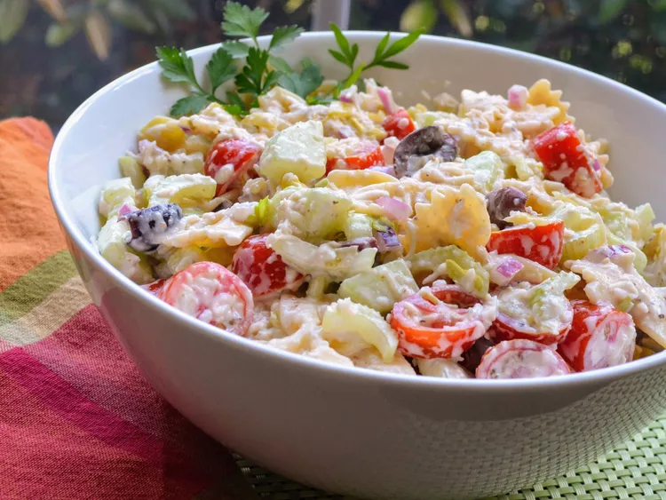

Tuscan Pasta Salad

Description
A flavorful diversion from the run-of-the-mill Italian pasta salad. I like to serve this with grilled, fried, or barbecued chicken, and a crusty artisan bread. I would double the portions if you want to have leftovers when serving 4 or more; this goes fast in my home! Enjoy!
Ingredients
- 1 cup bow-tie pasta
- 1 ½ cups grape tomatoes, sliced
- 1 cup Italian dressing (such as Kraft® Tuscan House Italian)
- 1 cup vegan mayonnaise (such as Vegenaise®)
- 3 stalks celery, chopped
- 1 cucumber, peeled and chopped
- ½ cup pepperoncini peppers, minced
- ½ cup red onion, diced
- ½ cup sweet banana peppers, diced
- ½ cup Kalamata olives, pitted and chopped
- ½ cup shredded mozzarella cheese
- ½ cup shredded Parmesan cheese
- salt and ground black pepper to taste
Steps
- Bring a large pot of lightly salted water to a boil. Cook bow-tie pasta at a boil, stirring occasionally, until tender yet firm to the bite, about 12 minutes. Drain.
- Combine pasta, tomatoes, Italian dressing, vegan mayonnaise, celery, cucumber, pepperoncini peppers, red onion, banana peppers, olives, mozzarella cheese, and Parmesan cheese in a large mixing bowl. Mix until the dressing takes on a creamy consistency and all ingredients are thoroughly coated.
- Season salad with salt and pepper. Serve immediately or refrigerate, mixing again just before serving.
Home